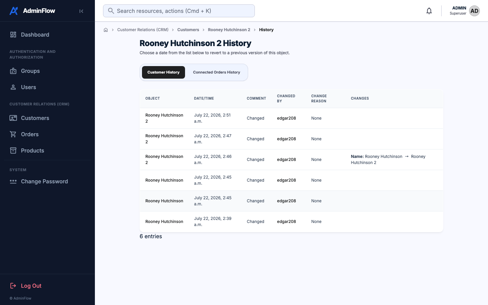

Audit History
AdminFlow integrates with django-simple-history-relation
(our relationship-aware fork of django-simple-history) to give every model a full
per-record change log — who changed what, when, with field-level and ManyToMany before/after
diffs rendered in a clean timeline.
Requirements
pip install "django-adminflow[history]"
# or directly:
pip install django-simple-history-relation
Add to INSTALLED_APPS and MIDDLEWARE:
INSTALLED_APPS = [
"adminflow",
"django.contrib.admin",
...
"simple_history", # ← add this
]
MIDDLEWARE = [
...
"django.contrib.auth.middleware.AuthenticationMiddleware",
"simple_history.middleware.HistoryRequestMiddleware", # ← add this (records who made the change)
...
]
Run migrations:
python manage.py migrate
Adding History to a Model
Add HistoricalRecords (or RelatedHistoricalRecords for automatic forward/reverse M2M
and change-aware tracking) to any model:
# models.py
from django.db import models
from simple_history.models import HistoricalRecords, RelatedHistoricalRecords
class Customer(models.Model):
name = models.CharField(max_length=200)
email = models.EmailField(unique=True)
phone = models.CharField(max_length=50, blank=True)
notes = models.TextField(blank=True)
date_created = models.DateTimeField(auto_now_add=True)
history = RelatedHistoricalRecords() # or HistoricalRecords()
def __str__(self):
return self.name
Enabling the History Admin
Use SimpleHistoryAdmin or RelatedHistoryAdmin (which adds atomic form+M2M batching
and side-by-side version comparison) as your admin base class:
# admin.py
from django.contrib import admin
from simple_history.admin import RelatedHistoryAdmin, SimpleHistoryAdmin
from .models import Customer
@admin.register(Customer)
class CustomerAdmin(RelatedHistoryAdmin):
list_display = ('name', 'email', 'phone', 'date_created')
AdminFlow automatically styles the history list and diff view — no extra code needed.
History View
Every change form gets a History button in the top-right. Clicking it shows:

Each entry shows:
Timestamp — date and time of the change
Changed by — the staff user who made the change
Field diffs — old value (strikethrough red) → new value (green)
Change type — Created / Changed / Deleted badge
Querying History
Access history programmatically:
customer = Customer.objects.get(pk=1)
# All history records for this customer
for record in customer.history.all():
print(record.history_date, record.history_user, record.history_type)
# Get the previous version
previous = customer.history.first().prev_record
# See what changed between two versions
delta = customer.history.first().diff_against(previous)
for change in delta.changes:
print(f"{change.field}: {change.old!r} → {change.new!r}")
Excluding Fields from History
class Customer(models.Model):
name = models.CharField(max_length=200)
password = models.CharField(max_length=128) # don't track this
history = HistoricalRecords(excluded_fields=["password"])